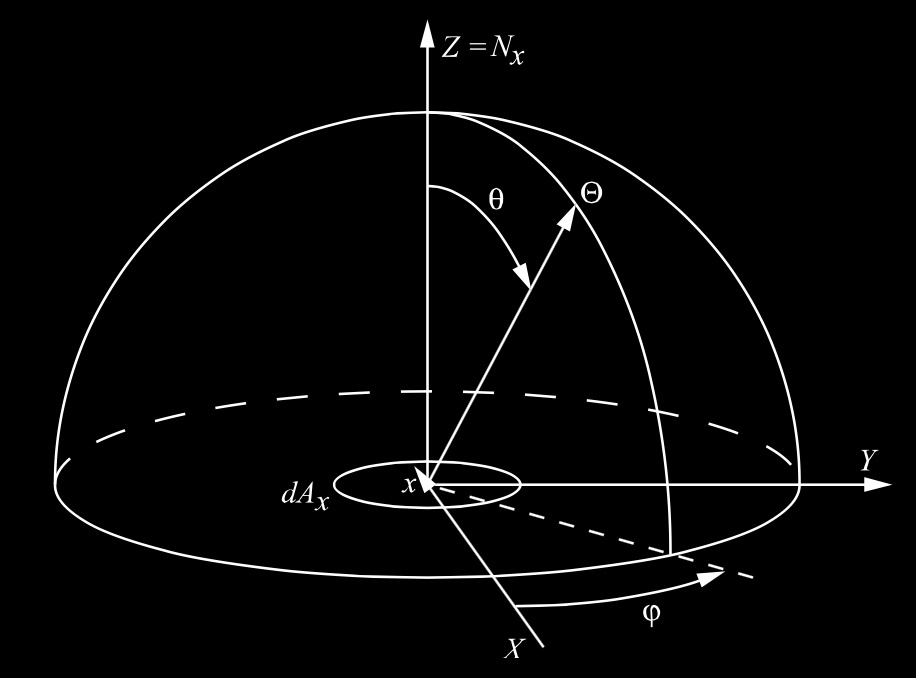
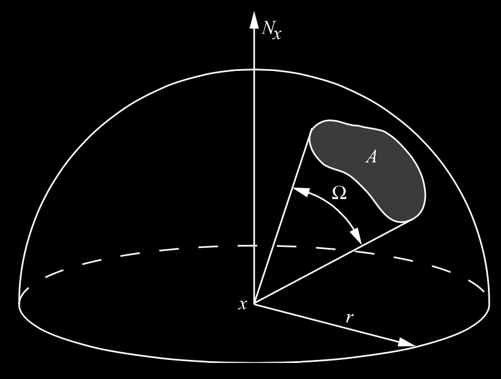
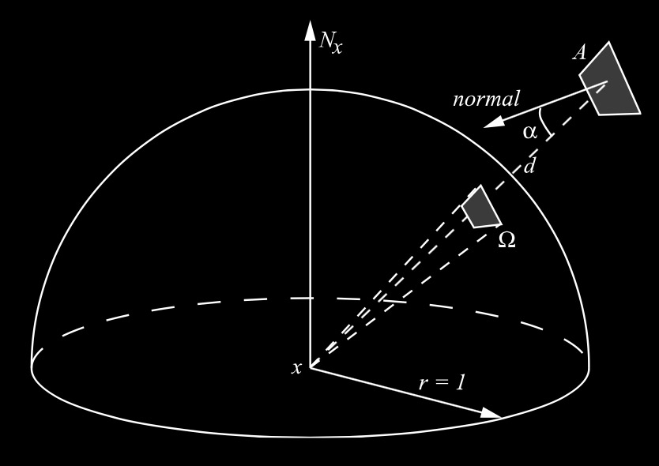
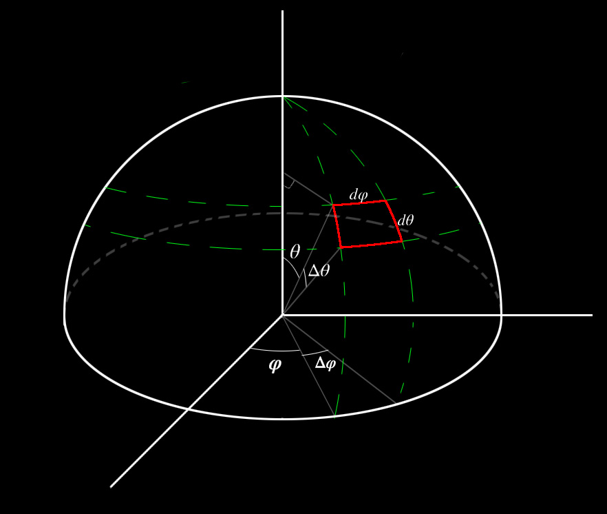

半球积分
2016-7-23
半球坐标
半球坐标是一个二维空间，球面上的每一点都可以由一个方向来确定。一般使用球坐标来表示。
在球坐标中，每一个方向都用两个角度来表示。方位角 $$$ \varphi $$$，仰角 $$$ \theta $$$。这两个角确定了一个方向 $$$ \Theta(\varphi,\theta) $$$。

$$$ \varphi $$$ 和 $$$ \theta $$$ 在一个指定的区间内。
\[\begin{aligned} \varphi &\in [0,2\pi] \\ \theta &\in [0,{\pi \over 2}] \end{aligned}\]
球坐标和笛卡尔坐标之间的转换公式：
\[\begin{aligned} x &= r cos\varphi sin\theta \\ y &= r sin\varphi sin\theta \\ z &= r cos\theta \end{aligned}\]
\[\begin{aligned} r &= \sqrt{x^2+y^2+z^2} \\ tan\varphi &= { y \over x } \\ tan\theta &= { \sqrt{x^2+y^2} \over z } \end{aligned}\]
一般在渲染计算中，会并不关心半径 $$$ r $$$，因为是在单位半球中计算的。
立体角
半球上的立体角定义为覆盖半球表面区域的面积除以半径的平方：
\[ \Omega = { A \over r^2 } \]

如果是单位半球（$$$ r=1 $$$），立体角 $$$ \Omega $$$ 就等于覆盖在半球上的面积 $$$ A $$$，即 $$$ \Omega = A $$$。由于半球面积是 $$$ 2 \pi r^2 $$$，所以整个半球的立体角 $$$ \Omega $$$ 等于 $$$ 2 \pi $$$。
要计算任意表面的立体角时，先将任意表面投影到半球表面，再计算半球表面区域所对应的立体角。
对于一个极小的表面，要计算其立体角可以使用如下的近似方法：
\[ \Omega \approx { A cos\alpha \over d^2 } \]

半球积分

微分立体角（differential solid angle）的值大小就是单位半球($$$ r=1 $$$)的红色区域的面积，红色区域（$$$ dA $$$）是一个极小的（微分）区域。如上图所示：
\[\begin{aligned} dA &= d\theta d\varphi \\ d\theta &= r \Delta\theta \\ d\varphi &= r sin\theta \Delta\varphi \\ dA &= r^2 sin\theta \Delta\theta \Delta\varphi \end{aligned}\]
由于是单位半球（$$$ r=1 $$$）,所以：
\[\begin{aligned} dA &= sin\theta \Delta\theta \Delta\varphi \\ \end{aligned}\]
所以半球积分是：
\[\begin{aligned} & \int_{\Omega} sin\theta d\theta d\varphi \\ & \int_{0}^{2\pi} \int_{0}^{\pi \over 2} sin\theta d\theta d\varphi \\ & d\omega = d\theta d\varphi \\ & \int_{0}^{2\pi} \int_{0}^{\pi \over 2} sin\theta d\omega \end{aligned}\]
注意积分中的 $$$ d\theta $$$ 和 $$$ d\varphi $$$（积分符号） 和上文中表示微分边长的 $$$ d\theta $$$ 和 $$$ d\varphi $$$ 是不一样的意义，虽然符号相同。